臺灣柑橘專業圖鑑
臺北農產運銷公司內部培訓自主學習資料
六大類 · 19 品種完整收錄 · 依農業部農業知識入口網正式分類
柑橘為芸香科（Rutaceae）柑橘屬及近緣屬（金柑屬、枳殼屬）果樹的統稱，是世界第一大果樹，也是臺灣最重要的果樹產業之一。臺灣柑橘栽培歷史悠久，自清朝由華南引進椪柑、桶柑以來，已有二百多年歷史。
臺灣柑橘依果實特性可分為六大類：甜橙類（柳橙、臍橙、血橙）、寬皮柑及雜交種（椪柑、桶柑、茂谷柑等）、柚類（文旦、白柚、紅柚等）、葡萄柚、檸檬與萊姆類、以及雜柑類（金柑、四季桔、佛手柑等）。
2023 年全臺柑橘種植面積約 2.4 萬公頃、年產逾 52 萬公噸，其中椪柑以約 5,002 公頃居柑橘類面積第一大。柑橘產期自秋季至翌年春，涵蓋中秋文旦、冬季椪柑桶柑、春季茂谷柑等，供應期長達半年以上，是年節最具代表性的水果。
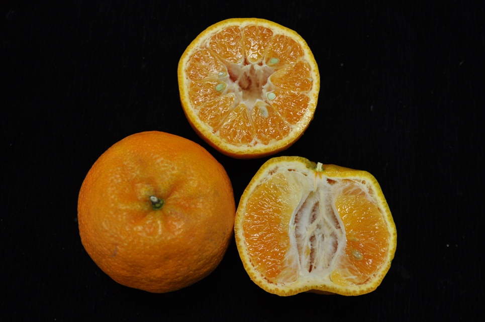
椪柑果實與剖面：果皮易剝、果肉囊瓣分明（圖：農業部農業知識入口網）
| 品種類別 | 主要產區 | 代表品種 |
|---|---|---|
| 寬皮柑 | 臺中東勢、苗栗卓蘭、嘉義梅山、新竹 | 椪柑、桶柑、茂谷柑、海梨柑 |
| 甜橙 | 嘉義、臺南、雲林、南投水里 | 柳橙、臍橙、血橙 |
| 柚類 | 臺南麻豆、花蓮瑞穗、宜蘭、雲林斗六 | 文旦、白柚、紅柚、西施柚 |
| 葡萄柚 | 雲林古坑、嘉義中埔、番路 | 紅寶石葡萄柚 |
| 檸檬萊姆 | 屏東、臺中、彰化、嘉義 | 優利加檸檬、無子萊姆 |
| 雜柑類 | 宜蘭、屏東、高雄 | 金柑、四季桔、佛手柑 |
臺灣柑橘依農業部農業知識入口網正式分類為六大類，本圖鑑收錄北農拍賣市場常見之 19 個品種：
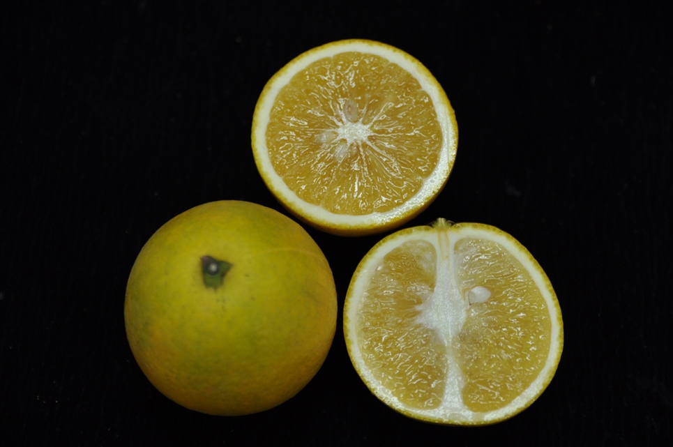
柳橙 · 臍橙 · 血橙
3 品種椪柑 · 桶柑 · 茂谷柑等
6 品種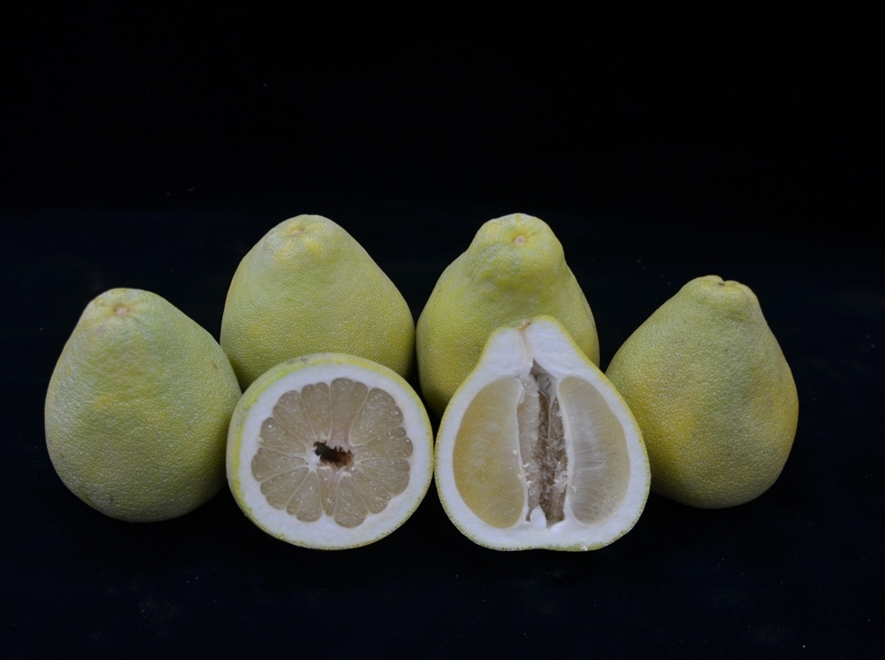
文旦 · 白柚 · 紅柚 · 西施柚
4 品種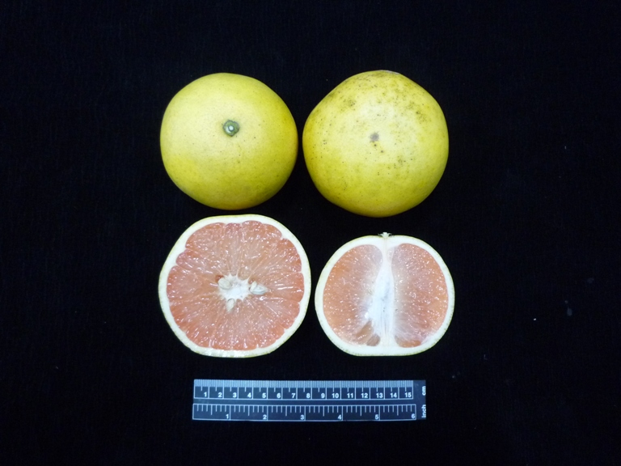
紅寶石葡萄柚
1 品種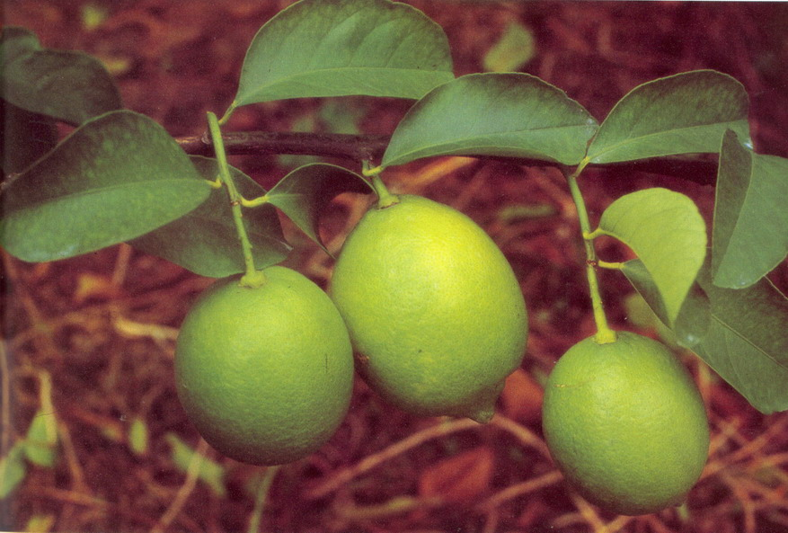
優利加檸檬 · 無子萊姆
2 品種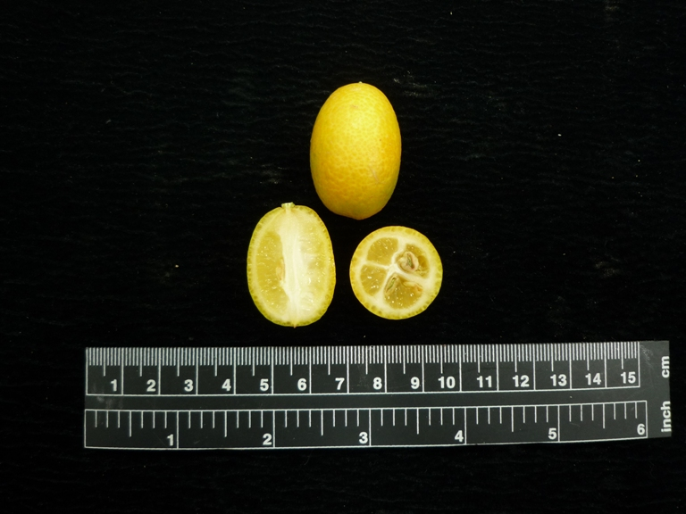
金柑 · 四季桔 · 佛手柑
3 品種甜橙（Citrus sinensis）為世界栽培最多的柑橘，臺灣主要栽培柳橙，另有品質優異的臍橙與果肉鮮紅的血橙。甜橙果皮較厚、不易剝皮，多榨汁或切片食用。
柳橙：果頂有明顯圓形印環，故名「印子柑」（圖：農業部農業知識入口網）
| 項目 | 特徵 |
|---|---|
| 來源 | 1930 年代由廣東引進，1960 年代嘉南大量栽培 |
| 果實 | 球形或長球形，中大，單果重 150g 左右；果頂圓，有明顯圓形印環（故名印子柑） |
| 果皮 | 油胞平稍粗，皮厚 0.2–0.3cm，瓤瓣 10–12 片 |
| 風味 | 果汁率高 45–55%，風味濃、帶清香氣，酸甜適中 |
| 糖度 | 12–14°Brix，酸度 0.5–0.6% |
| 產期 | 12 月至翌年元月成熟，可通風貯藏至 3–4 月 |
| 種子 | 每果 10–15 粒，胚白色、多胚性 |
| 產地 | 集中臺南、嘉義、雲林三縣 |
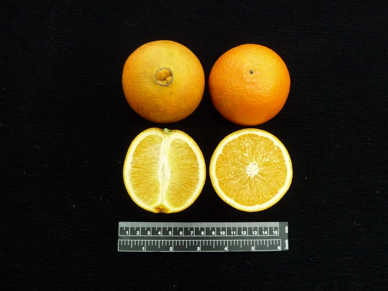
臍橙：果頂內著生一小果，開裂呈臍狀，為甜橙類中品質最優異者（圖：農業部農業知識入口網）
| 項目 | 特徵 |
|---|---|
| 英名 | Navel orange |
| 果實 | 甜橙類中果形最大，單果重 200–250g 以上；果頂內著生小果（複果），開裂呈臍狀 |
| 果肉 | 橙黃色，柔軟多汁，具淡清香氣 |
| 糖度 | 12–13°Brix，酸度 0.5–0.8% |
| 產期 | 12 月成熟（甜橙類較早熟） |
| 種子 | 一般無子（花粉不稔、胚珠部分不稔） |
| 產地 | 南投水里、臺中東勢、臺東成功 |
| 特色 | 鮮食甜橙中品質最優異，但風土適應性差、產量低、價格高 |
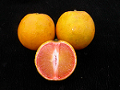
血橙：果肉呈血紅色，臺灣稱「紅肉柳橙」（圖：農業部農業知識入口網）
| 項目 | 特徵 |
|---|---|
| 英名 | Blood orange（Pigmented orange） |
| 來源 | 義大利西西里島引入「Moro」品種 |
| 果實 | 中型至中小型，圓形／卵形／扁圓形均有；果皮光滑 |
| 果肉 | 果肉呈血紅色（花青素 Anthocyanin） |
| 糖度 | 12–13°Brix，酸度低，果汁率高 |
| 產期 | 12 月–1 月成熟 |
| 特色 | 冷涼處果皮果肉紅色較深；風味清爽，有特殊消費層 |
寬皮柑（Citrus reticulata）果皮鬆、極易剝離，是臺灣人最熟悉的柑橘。此類包含椪柑、桶柑、茂谷柑等主力品種，以及近年流行的砂糖橘、早熟的佛利蒙柑與桶柑變異的海梨柑。
椪柑：世界栽培最廣的寬皮柑，果皮易剝、甜中帶微酸（圖：農業部農業知識入口網）
| 項目 | 特徵 |
|---|---|
| 英名 | Ponkan（Chinese honey orange） |
| 來源 | 原產印度，清乾隆四十年（1775 年）由潮州引入臺灣 |
| 果實 | 球形至扁球形，150–250g，果頂寬廣、果梗易有短頸突起 |
| 果皮 | 較粗，剝皮容易，但成熟易浮皮、較不耐貯藏 |
| 糖度 | 11–13°Brix，酸度 0.5–0.6%，風味優異 |
| 產期 | 11 月下旬–12 月下旬成熟 |
| 種子 | 每果 5–10 粒，多胚性、胚綠色 |
| 系統 | 高牆系、低牆系、軟枝系、無籽椪柑四大系統 |
| 系統 | 果形 | 果重 | 果皮 | 貯藏性 | 核心特色 |
|---|---|---|---|---|---|
| 高牆系 | 球形至扁球形 | 150–250g | 較粗、易剝 | 較不耐藏 | 栽培主力 · 果大 |
| 低牆系 | 扁圓形（較小） | 150–200g | 細緻光滑、較薄 | 較耐藏 | 酸度較高 · 栽培少 |
| 軟枝系 | 球形至扁球形 | 150–250g | — | — | 1950 年代林口發現 · 枝條水平樹似檸檬 |
| 無籽椪柑 | 果形較高 | — | — | — | 1970 年代東勢發現 · 無籽糖度較低 |
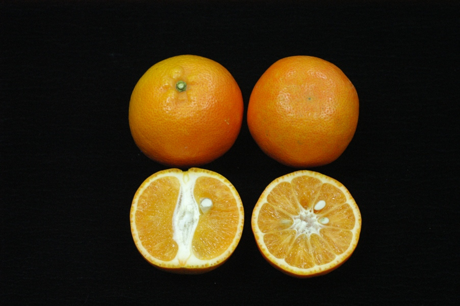
桶柑：晚熟柑橘，成熟期值舊曆年，故又稱「年柑」（圖：農業部農業知識入口網）
| 項目 | 特徵 |
|---|---|
| 英名 | Tankan（俗名：草山柑、年柑、焦柑） |
| 來源 | 椪柑 × 甜橙天然雜交（桔橙類 Tangor）；清乾隆五十四年（1789）由潮州引入 |
| 果實 | 球形，平均單果重 150g 左右，果頂果梗部豐圓 |
| 果皮 | 稍粗厚，成熟果皮呈濃橙黃色，果皮緊、耐貯運 |
| 產期 | 2 月–3 月成熟（臺灣晚熟柑桔），臺中和平可掛至 3–4 月 |
| 產地 | 臺中、苗栗、新竹（中北部冷涼地區風味較佳） |
| 特色 | 以前用木桶包裝運輸故名桶柑；成熟期值舊曆年故稱年柑 |
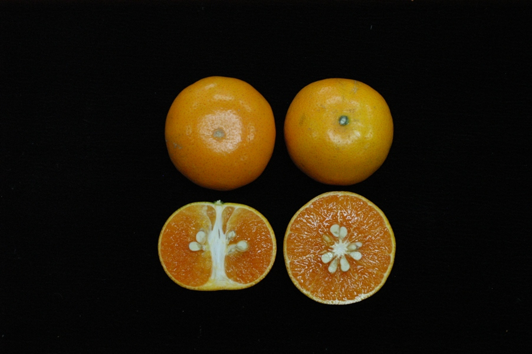
茂谷柑：糖度高可達 14–15°Brix 以上，風味濃厚（圖：農業部農業知識入口網）
| 項目 | 特徵 |
|---|---|
| 英名 | Murcott（Honey tangerine） |
| 來源 | 民國 60 年代臺大林樸教授由美國佛州引進 |
| 果實 | 中型 150–200g，果梗小，果皮薄光滑、黃橙色 |
| 果肉 | 柔軟、橙色，糖度高可達 14–15°Brix 以上，酸度 0.6–0.8% |
| 產期 | 翌年 1 月下旬–2 月下旬成熟 |
| 種子 | 小而多，平均 12–20 粒 |
| 產地 | 東勢、梅山、古坑、水里品質較整齊 |
| 特色 | 寬皮柑×甜橙雜交，風味濃厚耐貯運；有隔年結果現象 |
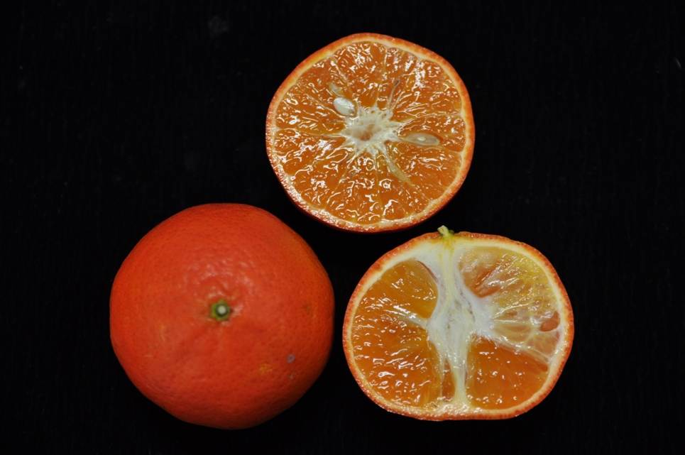
佛利蒙柑：成熟果皮呈深橙紅色，色澤豔麗極為誘人（圖：農業部農業知識入口網）
| 項目 | 特徵 |
|---|---|
| 英名 | Fremont |
| 果實 | 果形較小，100–150g，成熟果皮呈深橙紅色、極為誘人 |
| 糖度 | 10 月下旬 11°Brix → 12 月提高至 14–15°Brix 以上 |
| 產期 | 10 月下旬–12 月下旬（早熟種） |
| 特性 | 小樹容易結果、具豐產，多胚性胚綠色；南部已有少量栽培 |
| 特色 | 掛樹性佳、色澤亮麗，亦為極佳盆栽柑桔 |
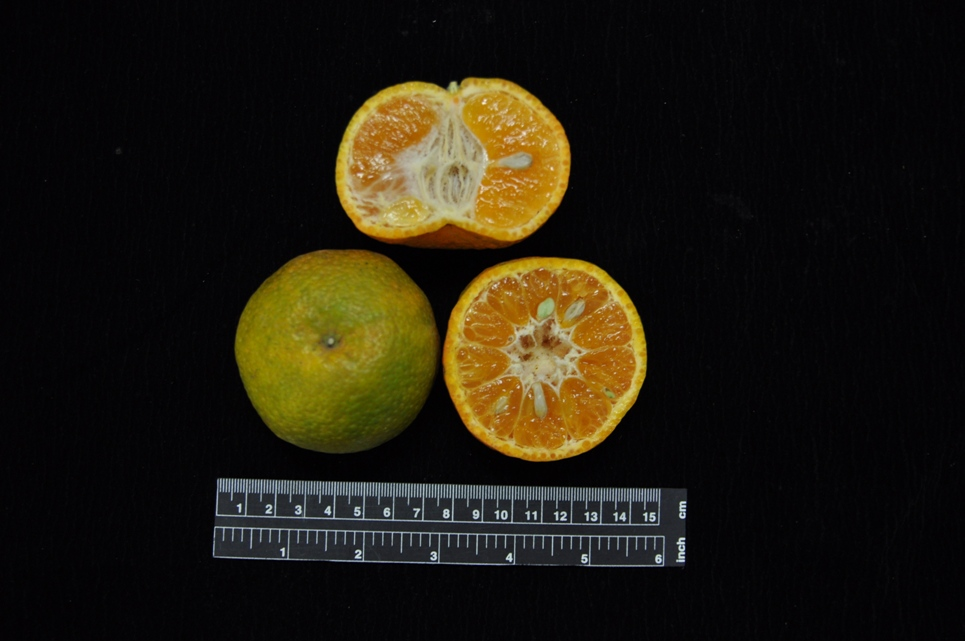
砂糖橘：果實小巧扁圓，具特殊香氣、酸味低（圖：農業部農業知識入口網）
| 項目 | 特徵 |
|---|---|
| 來源 | 中國大陸引進 |
| 果實 | 扁圓形，果重約 50g（小型），成熟時橙色 |
| 糖度 | 12–13°Brix，成熟時酸味低 |
| 產期 | 12 月–1 月 |
| 特色 | 具特殊香氣，果小味甜，近年市場受歡迎 |
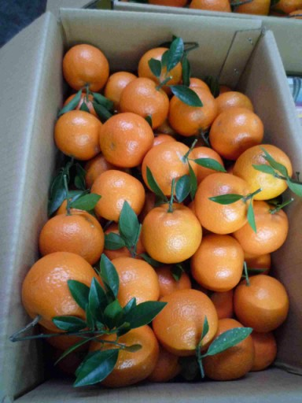
海梨柑：桶柑的一種，果皮光滑、成熟期在舊曆年前後（圖：農業部農業知識入口網）
| 項目 | 特徵 |
|---|---|
| 來源 | 約 200 餘年前引進，為桶柑的實生或芽條變異 |
| 果實 | 圓球形，果皮表面光滑、橙色，多帶葉採收 |
| 風味 | 糖度酸度果汁率均較一般桶柑低，但糖酸比高（常在 25 以上） |
| 產期 | 元月–2 月成熟，不耐儲藏 |
| 產地 | 集中北部，尤以新竹縣最多 |
| 特色 | 大致分大果系、小果系；高溫濕潤易致砂囊乾囊化（乾米） |
柚（Citrus grandis / Citrus maxima）為柑橘中果實最大的一類，果皮厚、耐貯藏。臺灣以麻豆文旦最負盛名，另有白柚、紅柚、西施柚等，是中秋節應景與送禮的主力水果。
麻豆文旦：洋梨形，白露前後採收，辭水後風味更佳（圖：農業部農業知識入口網）
| 項目 | 特徵 |
|---|---|
| 來源 | 18 世紀由福建漳州引入臺南安定，後傳入麻豆發生突變 |
| 果實 | 洋梨形至倒卵形，400–800g（樹齡愈老果實愈小），果頂平坦稍凹 |
| 果皮 | 淡黃綠色，皮薄 1–1.5cm，油胞明顯 |
| 果肉 | 淡白／淡黃綠／淡粉紅，柔軟多汁，優異者呈肉質化、有彈性、甘味強 |
| 糖度 | 11–12°Brix，稍帶淡淡苦味 |
| 產期 | 9 月上旬（白露前後）採收 |
| 種子 | 果實無核（無花粉、單偽結實） |
| 特色 | 採收後宜辭水 1–2 週使果肉柔軟，風味更佳；各地冠名如斗六文旦、瑞穗文旦、蘭陽文旦 |
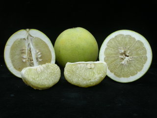
麻豆白柚：果實可達 1–2.4 公斤，果肉白色柔軟多汁（圖：農業部農業知識入口網）
| 項目 | 特徵 |
|---|---|
| 來源 | 約 1826 年麻豆實生變異，1927 年始稱「麻豆白柚」 |
| 果實 | 扁球形或短球形，1,000–2,400g（大果） |
| 果皮 | 淡黃色，貯藏後呈濃黃色，皮稍平滑 |
| 果肉 | 白色，柔軟多汁，風味佳 |
| 糖度 | 9–13°Brix，酸度 0.5–0.7% |
| 產期 | 花期 3–4 月，成熟期 10 下旬–11 月 |
| 種子 | 13–147 粒，或有時無子 |
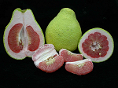
麻豆紅柚：果肉鮮紅色，柔軟多汁，貯藏後品質更佳（圖：農業部農業知識入口網）
| 項目 | 特徵 |
|---|---|
| 來源 | 原產麻豆安業庄（有時亦稱「紅文旦」，易與細油胞品種相混） |
| 果實 | 洋梨形，果頂部稍突出，800–1,320g，油胞顯著隆起、有粗糙感 |
| 果肉 | 絨層粉紅色，果肉鮮紅色、柔軟多汁，甘味強 |
| 糖度 | 8–11°Brix，酸度 0.39–0.61%（酸味稍高） |
| 產期 | 花期 3–4 月，成熟期 10–11 月 |
| 種子 | 可達 135 粒，亦有無子果實 |
| 特色 | 結果性良好豐產，貯藏後品質更佳 |
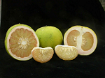
西施柚：果肉淡粉紅或粉紅色，甘味強（圖：農業部農業知識入口網）
| 項目 | 特徵 |
|---|---|
| 來源 | 約 1985 年由泰國引入 |
| 果實 | 扁球形，800–1,200g，果面光滑、淡黃綠色 |
| 果肉 | 絨層粉紅色，果肉淡粉紅或粉紅色，沙囊表面光亮 |
| 糖度 | 10–15°Brix，酸度 0.4–0.6%，甘味強 |
| 產期 | 開花 2–3 月，成熟期 10–11 月 |
| 產地 | 適合南部平地，燕巢等地有栽培 |
| 種子 | 90–150 粒 |
葡萄柚（Citrus paradisi）為柚與甜橙的天然雜交種，果實成串如葡萄故名。臺灣主要栽培紅寶石葡萄柚，果肉粉紅、多汁，是與進口品差異化的在地品種。
紅寶石葡萄柚：果肉粉紅色，套黑袋後果皮呈鮮豔紅色（圖：農業部農業知識入口網）
| 項目 | 特徵 |
|---|---|
| 英名 | Ruby grapefruit（Ruby Red / Redblush） |
| 果實 | 球形至扁球形，單果重 350–400g，遮蔭處呈紅寶石暈斑 |
| 果肉 | 粉紅色，肉質柔軟多汁、品質佳 |
| 糖度 | 8–9°Brix，酸度 1.0–1.2% |
| 產期 | 12 月成熟，11 月–翌年 3 月供應 |
| 種子 | 0–3 粒，屬商業性無子品種 |
| 產地 | 雲林古坑最多，嘉義中埔、番路亦有生產 |
| 特色 | 6 月底前套黑袋，成熟果皮呈鮮豔紅色以差異化行銷；美國葡萄柚一半為紅寶石 |
檸檬與萊姆同屬柑橘屬，但風味酸、多用於飲料、料理與加工。臺灣栽培的優利加檸檬（黃皮）與無子萊姆（綠皮）是兩大代表，兩者皆周年開花結果。
優利加檸檬：果頂乳狀突出，酸味強，酸度約 2%（圖：農業部農業知識入口網）
| 項目 | 特徵 |
|---|---|
| 英名 | Eureka lemon |
| 果實 | 中等長球形至倒卵形，果梗部頸狀突起、果頂乳狀突出 |
| 果皮 | 成熟時果面黃色，果皮厚 |
| 果肉 | 淡黃色，柔軟多汁，酸味強（酸度約 2%） |
| 產期 | 四季開花，9–10 月成熟，產期集中夏季、以綠果採收 |
| 產地 | 屏東、臺中生產較多 |
| 種子 | 5–10 粒，胚白色 |
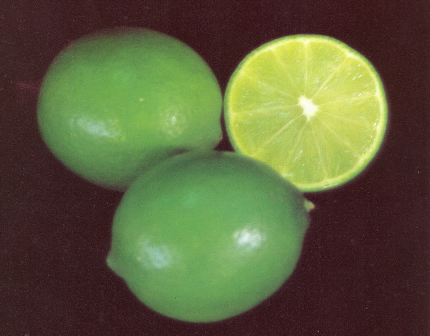
無子萊姆：綠皮、無子，果皮薄光滑緊密，具清香味（圖：農業部農業知識入口網）
| 項目 | 特徵 |
|---|---|
| 英名 | Lime（學名 Citrus latifolia） |
| 果實 | 長球形至卵形，80–120g，果皮綠至黃綠色、薄光滑緊密 |
| 果肉 | 淡黃綠色，柔軟多汁，具清香味 |
| 產期 | 周年有果，5–6 月及 11–翌年 1 月較多 |
| 種子 | 無子 |
| 產地 | 彰化、嘉義最多 |
| 特色 | 較檸檬耐熱、適合臺灣；無子適合清涼飲料、料理代替食用醋 |
雜柑類包含金柑屬（金柑）及其他特殊柑橘，多為小型果、加工或觀賞藥用用途，是柑橘家族中別具特色的一群。
金柑：果皮甜、果肉酸，連皮食用，蜜餞加工為宜蘭特產（圖：農業部農業知識入口網）
| 項目 | 特徵 |
|---|---|
| 英名 | Kumquat（俗名金棗），屬金柑屬（Fortunella） |
| 來源 | 中國原產 |
| 果實 | 長實金柑橢圓形，僅 10–20g（小型），果皮光滑鮮橙色 |
| 風味 | 果皮味甜、果肉酸，瓤瓣 4–5 片 |
| 產期 | 11 月–次年 2 月成熟 |
| 產地 | 宜蘭縣最多（約 300–400 公頃） |
| 特色 | 蜜餞加工大宗，宜蘭特產；鮮果用於祭拜、盆栽觀賞 |
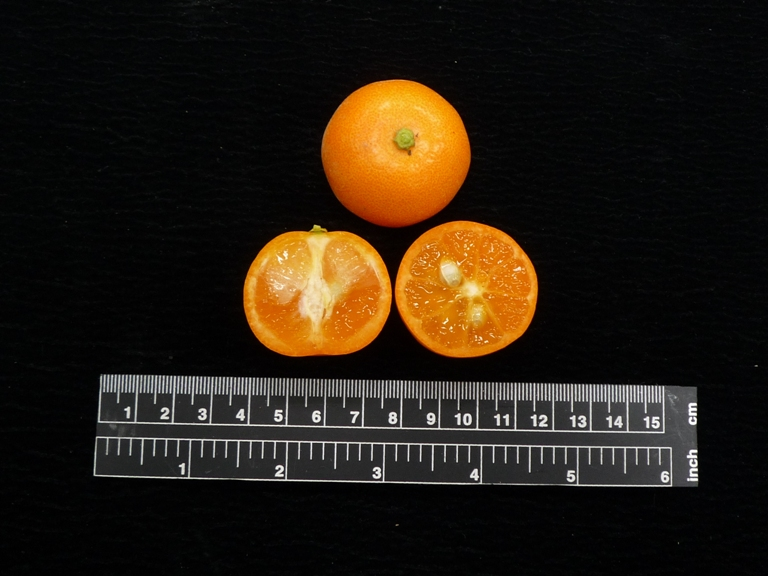
四季桔：果實小巧球形，酸味強，金桔檸檬飲料原料（圖：農業部農業知識入口網）
| 項目 | 特徵 |
|---|---|
| 來源 | 東南亞原產，可能為金柑×桔（tangerine）雜交 |
| 果實 | 小球形、鮮橙色、果皮薄，酸味強 |
| 果肉 | 柔軟多汁，6–7 瓤瓣，種子 6–10 粒 |
| 開花 | 開花性強、周年開花 |
| 產地 | 屏東、高雄（金桔檸檬飲料流行後大規模栽培） |
| 特色 | 轉色期採收榨汁，與檸檬汁混合加糖成金桔檸檬；亦作柑桔矮性砧木、盆栽 |
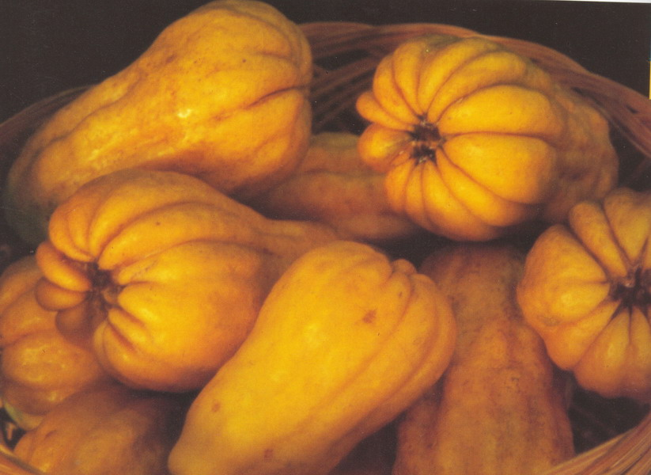
佛手柑：果實呈手指狀分裂如佛手，橙黃色具香味（圖：農業部農業知識入口網）
| 項目 | 特徵 |
|---|---|
| 來源 | 香櫞（Citrus medica）之變種 |
| 果實 | 果實呈手指狀分裂（如佛手），橙黃色、具香味 |
| 產期 | 12 月–隔年 1 月成熟 |
| 特性 | 樹型小、枝條軟有刺，易扦插繁殖 |
| 用途 | 主要觀賞及藥用 |
| 品種 | 類別 | 果重 | 糖度(°Brix) | 產期 | 核心特色 |
|---|---|---|---|---|---|
| 柳橙 | 甜橙 | 150g | 12–14 | 12–翌年1月 | 印子柑 · 最大宗 |
| 臍橙 | 甜橙 | 200–250g | 12–13 | 12月 | 無子 · 品質最優 |
| 血橙 | 甜橙 | 中小 | 12–13 | 12–1月 | 紅肉 · 花青素 |
| 椪柑 | 寬皮柑 | 150–250g | 11–13 | 11下–12下 | 寬皮柑之王 · 易剝 |
| 桶柑 | 寬皮柑 | 150g | — | 2–3月 | 年柑 · 晚熟耐藏 |
| 茂谷柑 | 寬皮柑 | 150–200g | 14–15+ | 1下–2下 | 高糖度 · 風味濃 |
| 佛利蒙柑 | 寬皮柑 | 100–150g | 11→15 | 10下–12下 | 早熟 · 色澤豔麗 |
| 砂糖橘 | 寬皮柑 | 50g | 12–13 | 12–1月 | 小巧香甜 |
| 海梨柑 | 寬皮柑 | — | 糖酸比25+ | 1–2月 | 桶柑變異 · 果皮光滑 |
| 麻豆文旦 | 柚類 | 400–800g | 11–12 | 9月上旬 | 無核 · 中秋應景 |
| 麻豆白柚 | 柚類 | 1–2.4kg | 9–13 | 10下–11月 | 大果 · 白肉 |
| 麻豆紅柚 | 柚類 | 800–1320g | 8–11 | 10–11月 | 紅肉 · 貯藏更佳 |
| 西施柚 | 柚類 | 800–1200g | 10–15 | 10–11月 | 粉紅果肉 |
| 紅寶石葡萄柚 | 葡萄柚 | 350–400g | 8–9 | 11–翌年3月 | 商業性無子 |
| 優利加檸檬 | 檸檬 | 中等 | 酸度2% | 夏季(綠果) | 酸味強 · 料理飲料 |
| 萊姆 | 檸檬 | 80–120g | 清香味 | 周年 | 無子 · 綠皮 |
| 金柑 | 雜柑 | 10–20g | 皮甜肉酸 | 11–翌年2月 | 連皮吃 · 蜜餞 |
| 四季桔 | 雜柑 | 小 | 酸味強 | 周年 | 金桔檸檬原料 |
| 佛手柑 | 雜柑 | — | 香味 | 12–翌年1月 | 觀賞藥用 |
柑橘類在北農的品名代號以 C 系列編碼（統一編碼 203 開頭），代表品種包括椪柑、桶柑、柳橙、茂谷柑、文旦、葡萄柚、檸檬等。
| 等級 | 品質標準 |
|---|---|
| 特級 | 成熟適度，果形完整且端正，色澤優良，果面光滑，外觀無瑕疵 |
| 優級 | 成熟尚適度，果形完整尚端正，色澤良好，果面尚光滑，外觀輕微瑕疵 |
| 良級 | 品質次於優級品，具有商品價值者 |
| 規格 | 超大（30） | 特大（27） | 大（25） | 中（23） | 小（21） |
|---|---|---|---|---|---|
| 周徑 | 30 公分以上 | 27–30 公分 | 25–27 公分 | 23–25 公分 | 21–23 公分 |
| 項目 | 規格 |
|---|---|
| 容器種類 | 紙箱 |
| 長×寬×高 | 八號箱 45×30×26 公分（可微調內縮 1–2 公分） |
| 淨重 | 15 公斤 |